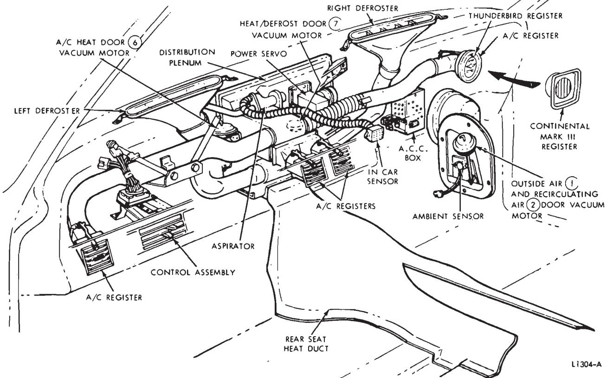
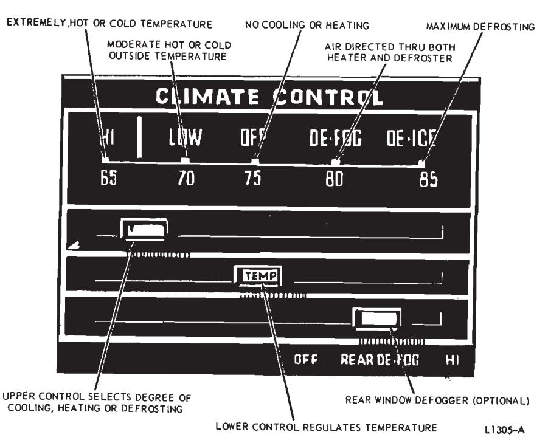
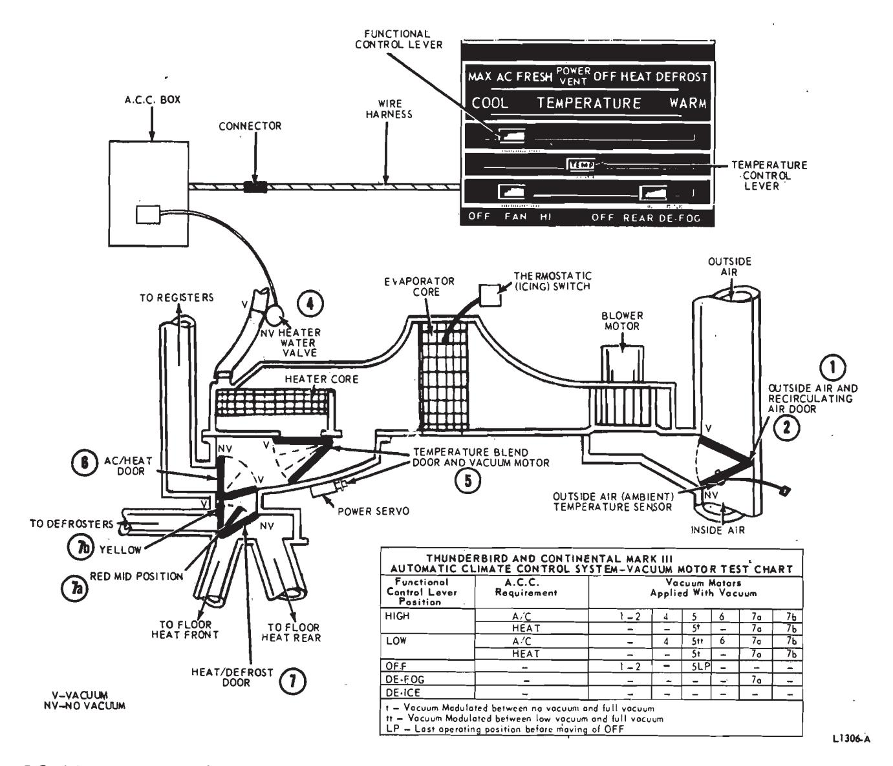

Automatic Temperature Control · 34-05-14a
The Automatic Climate Control includes a functional control lever for HIGH, LOW, OFF, DE-FOG and DE-ICE and a temperature control lever. The controls are located to the left of the steering column. The desired temperature is selected by sliding the temperature lever to any position on the dial, and has a range between 65 and 85 degrees.
The Automatic Climate Control System (Fig. 12) will automatically control the temperature and blower speed, and will reduce the relative humudity of air inside the car. The operator need only set a dial at the desired temperature and select a control position and the system will deliver dry heated or cooled air, to maintain the car interior at the temperature selected. The system will maintain the set comfort level automatically regardless of the weather and requires little or no change in the setting to compensate for changes due to outside weather conditions.
During operation, outside air is drawn from the cowl vent just below the windshield at all times, except at maximum cooling when recirculating air is used.
The system utilizes what is called a reheat system. With this type of system all airflow from the blower passes through the evaporator core first, removing excess moisture from the air. This removal of excess moisture from the air, particularly when traveling in humid weather, limits window fogging and interior condensation. Temperature is then regulated by reheating the cooled air to the desired temperature. Temperature of the outlet air is varied by the temperature blend door (5) which governs the flow of cooled air through and/or around the heater core. The air is mixed in the distribution plenum. From here it is diverted to the heater outlets, the defroster nozzles, or the air conditioner registers.
Warm Air Operation
If the interior temperature is below the dial setting and warmer air is required to maintain the desired tem- perature level, the air is distributed through openings at the bottom of the unit for the front passenger compartment. A duct is located over the tunnel to direct heater air at floor level to the rear seat area. Air for defroster operation is distributed through two defroster ducts onto the windshield at minimum heat only. Air for defog operation is split between floor outlets and defroster nozzles. Provision is made to delay the operation of the system until the engine coolant has warmed enough to minimize the duration of a cold air blast from the heater outlets
Cool Air Operation
If the interior temperature of the car is above the temperature setting on the dial, and cooler air is required to maintain the desired air temperature level, the air is distributed through the four adjustable registers on the instrument panel. The system goes into operation, regardless of engine coolant temperature. This is done to provide a rapid cool-down rate.

Fig. 12 — Automatic Climate Control Assembly—Thunderbird and Continental Mark III
Control Operation
The Automatic Climate Control (A.C.C.) system includes a functional control lever for HIGH, LOW, OFF, DE-FOG and DE-ICE and a temperature control lever. The controls are located to the left of the steering column (Fig. 13).
Three temperature sensors are used. An outside air temperature sensor is mounted on the outside air (1) and recirculting air (2) door in the right air intake. Another temperature sensor is located in the instrument panel and senses the car interior temperature. The third sensor is clamped to the water pump by-pass hose and senses engine coolant temperature.
Temperature Control Lever
The temperature control lever in the instrument panel controls a variable resistor. The variable resistor sends electrical signals to the A.C.C. box, which in turn, applies vacuum to the temperature blend door (5) vacuum motor. This action controls the amount of reheating of the incoming precooled air. The interior air temperature can be automatically maintained anywhere between 65 degrees F and 85 degrees F.
Functional Control Lever Off Position
With the functional control lever in the OFF position, the blower motor is off, the outside air (1) and recirculating air (2) door is closed to the outside air, the heater water valve (4) is open, and the system is inoperative.
Low Position
With the lever in the LOW position, the system selects fresh air for heating, or cooling, and automatically adjusts the air flow with any one of five blower speeds. The blower speed selected, depends on the difference between the temperature setting of the temperature lever and the car interior air temperature. A high temperature difference provides a higher blower speed than that for a low temperature difference.
High Position
System operation with the lever in HIGH position is similar to LOW except for blower motor speed and the use of recirculated air when maxi- mum air conditioning is required. With the system in HIGH, blower motor speed is selected from three speeds which are somewhat higher than the five speeds used in LOW, to provide for optimum system performance in temperature extremes. The highest speed is automatically selected and as the temperature approaches the pre-set level, the system switches to fresh air operation and the blower motor speed and the intensity of the heated or cooled air are lowered to maintain the pre-set temperature.

Fig. 13 — Controls For Automatic Climate Control—Thunderbird and Continental Mark III
The system remains on recirculating air for all cooling operations. Also the water valve is shut off when maximum cooling is called for.
In LOW and HIGH, with heatertype operation, approximately 10 percent of the heater air is diverted from the heat duct to the defroster outlet to keep the windshield clear. No air is directed to the windshield in air conditioning-type (cooling) operation.
De-Fog Position
With the slide lever in DE-FOG position, the system operation is the same as in HIGH except that the airflow is split. An airflow of 40 percent is discharged from the defroster nozzles, and 60 percent is discharged from the floor outlets, rather than the air conditioning registers. There is no water warm-up and blower delay in DE-FOG. The temperature is con- trolled automatically.
De-Ice Position
With the functional control lever in DE-ICE position, the system selects the maximum heat available at the highest blower speed and the air is discharged from the defroster nozzles. In DE-ICE approximately 10 percent of the airflow is directed to the heat ducts.
Fig. 14 shows air door, valve positions and vacuum application for the various control lever positions.
Vacuum Control System
The vacuum control system (Fig. 15) consists of a vacuum supply tank and integral check valve, a vacuum motor actuated heater water valve (4), three vacuum motor actuated air doors, A.C.C. box (Automatic Climate Control), a vacuum motor actuated power servo (temperature blend door (5) vacuum motor) and the required vacuum tubing and junction blocks to connect the components. The vacuum reservoir and integral check valve is located on the front of the left fender apron.
 Fig. 15 — Automatic Climate Control Vacuum System Schematic—Thunderbird and Continental Mark III
Fig. 15 — Automatic Climate Control Vacuum System Schematic—Thunderbird and Continental Mark III
The controls on the instrument panel provide electrical signals to the A.C.C. box. The A.C.C. box, in turn, supplies vacuum signals (application) through the applicable color coded vacuum hoses to the required vacuum motors and power servo which open and close the respective air doors.

Fig. 14 — A.C.C. Control Setting Vacuum Motor Application Chart—Thunderbird and Continental Mark III
The AC/heat door (6) and outside air (1) and recirculating air (2) door vacuum motors are two-position motors. The heat/defrost door (7) vacuum motor is a three-position motor. The temperature blend door (5) vacuum motor may be set at any position within the limits of its travel, depending on the amount of vacuum supplied from the A.C.C. box. The temperature blend door (5) vacuum motor also sets the blower speed.
The position of the temperature blend door (5) changes automatically to maintain the temperature selected on the dial; at the same time, blower speeds are reduced. If the in-vehicle temperature rises above the dial setting, the temperature blend door (5) moves to admit more cool air and less warm air. If the in-vehicle temperature drops below the dial setting, the temperature blend door (5) moves to admit more warm air and less cool air. As maximum heating or cooling operation is approached, blower speeds are automatically increased.